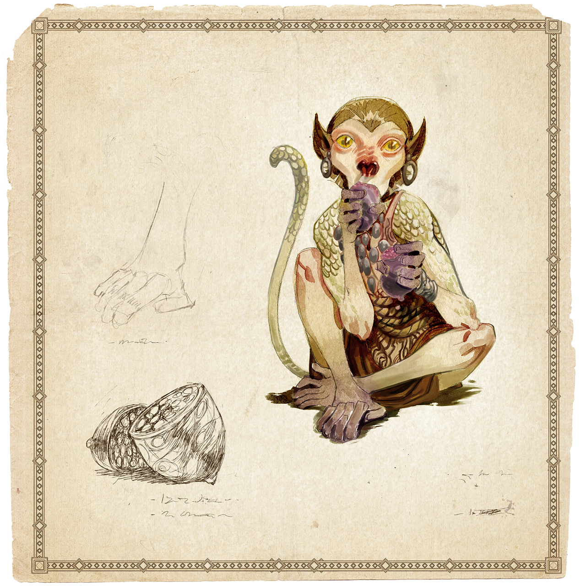

Lần đầu tôi gặp các sinh vật lạ lùng có tên vastaya là khi cập bến bờ biển màu mỡ của Ionia. Tôi đã hy vọng sẽ tìm được ở đó phương thuốc trị căn bệnh duy Piltover chỉ mới có – chán chường – nỗi buồn tẻ nhẹ nhàng trong cuộc sống hàng ngày ở Thành Phố Tiến Bộ huy hoàng, nơi tôi kiếm sống bằng nghề viết lách.
Giữa lòng Ionia tĩnh lặng và nhiệm màu – nơi chưa được khám phá bởi các chuyên viên địa đồ không sinh trưởng trên bờ biển rộng lớn này – tôi quyết tâm tìm ra thứ nằm ngoài phạm vi chuyên môn của mình. Thứ gì đó phi thường, kỳ diệu, đẹp đẽ, và có phần đáng sợ nữa.
Tôi gặp vastaya đầu tiên dưới màn đêm, khi nó lục lọi khu trại để kiếm thứ gì bỏ bụng. Dù nó suýt sợ hãi lẩn mất lúc tôi tỉnh giấc, nhưng một nắm bánh ngọt và khúc hát ru ngọt ngào mẹ tôi từng dạy (tôi có giọng nam cao, nhờ đó dư sức cất lên vài bài hát để mọi người thư giãn lúc chiều tà) đã dụ được nó ở lại.
Nó đi hai chân như người, nhưng đường nét khuôn mặt lại là sự kết hợp kỳ lạ của nhiều sinh vật khác nhau tôi từng thấy trong sách, hoặc trong những chuyến du hành; tóc mai dài, mũi nhọn, vảy rắn phủ khắp cơ thể, và sức mạnh của một con diêm quái Bilgewater (cái đó tôi khám phá ra khi nó ăn hết bánh và nhấc tôi quá đầu bằng cùng nỗ lực tôi dùng để gãi mũi, rồi cứ giữ thế đến khi quyết định rằng tôi không giấu thêm đồ ăn gì trên giường).

Sinh vật đó mau mắn bỏ chạy vào màn đêm, và tôi biết mình phải làm gì: tôi kiên quyết tìm hiểu thêm về các vastaya này (dân địa phương gọi họ thế).